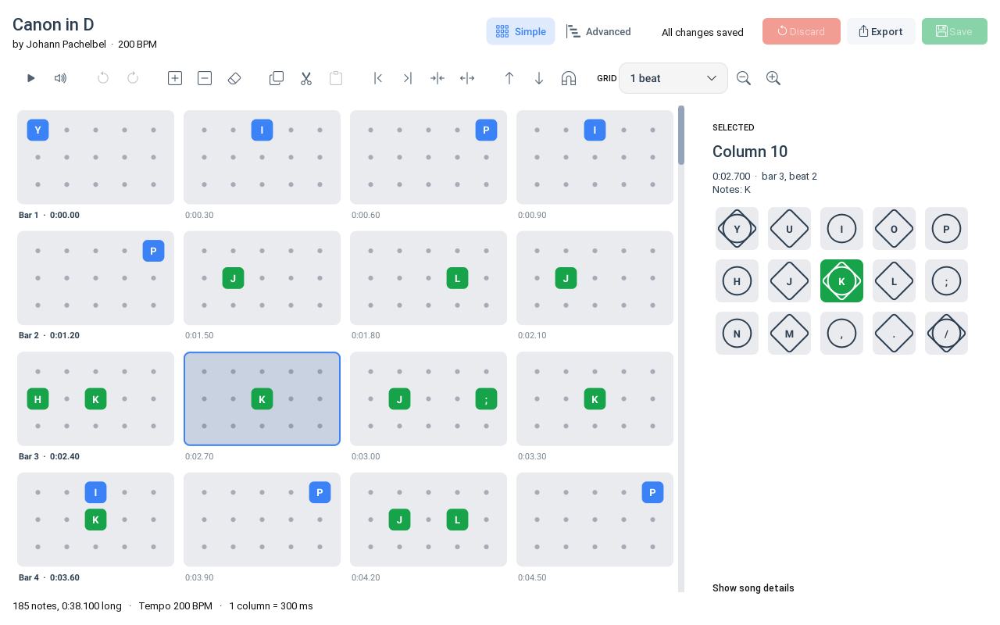
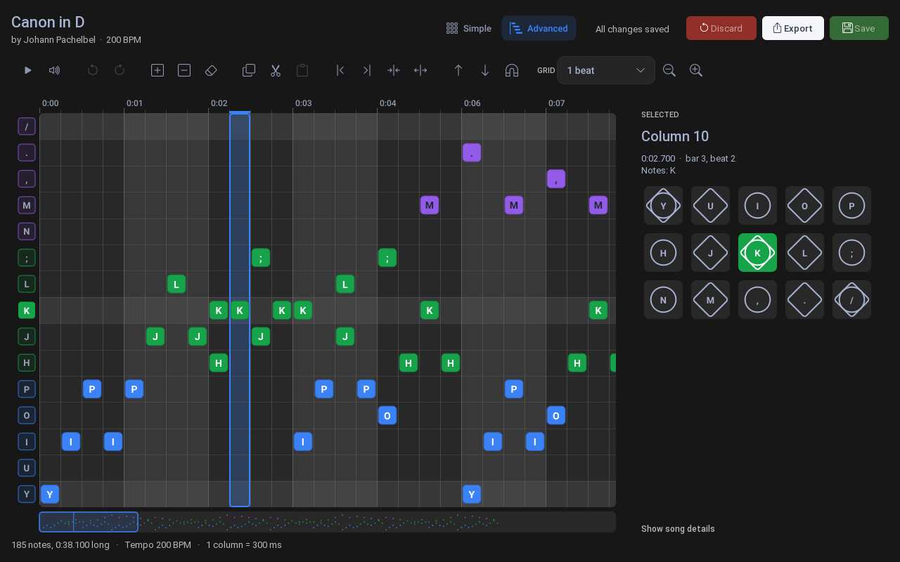

DocsUsing the app
User guide
A quick tour of everything the app can do. If you haven't installed it yet, start with the install guide.
Quick Start
The first time you open the app, a short setup walks you through:
- Look: follow Windows, or always light or dark, and pick a theme.
- Previous version: the app looks for the original Electron app and offers to import its songs, playlists, favorites and settings in one click. If it isn't found, press Choose folder and pick the old app's folder. Nothing in the old app is changed.
- Playback: Lite or Strict, and whether to hide the window when a song starts.
- Controls: the global shortcuts for play, previous, next and speed.
Press Skip setup to jump straight in. Run it again any time from Settings → General → Quick Start.
The main window

- Top
- The menu button (☰) and the search box. Search looks at song names and authors.
- Middle
- Your songs, one card each, with the name, author, transcriber and BPM.
- Bottom
- The player, with the song name, progress bar, speed, long-press switch, loop and the Prev, Play and Next buttons.
The menu (☰) switches between All Songs, Favorite, Playlists, Recent Play and Store.
Adding songs
There are three ways:
- Click + in the bottom-right corner and pick one or more sheet files (
.json,.txt,.skysheet,.mid,.midi). - Open Store from the menu, find a song and download it.
- Copy everything from the original Electron app with Settings → General → Import Previous Songs.
Playing a song
- Click a song card to pick it.
- Click inside the Sky window.
- Press Ctrl Shift V, or click Play. Press it again to pause.
Pausing keeps your place. To start from somewhere else, pause and click anywhere on the progress bar.
| Control | What it does |
|---|---|
| Speed | How fast the song plays, from 0.1× to 5×. Ctrl ↑ and Ctrl ↓ change it, even while playing. |
| Long-press mode | Holds each key for the length of the note. Turn it on for instruments that hold notes, like the violin. |
| Loop | Click to switch between off, loop the whole list, and loop one song. |
| Delay next | How long to wait before the next song starts. |
Lite or Strict?
Choose in Settings → General → Playback Mode:
- Lite is light on your PC, but the timing can drift a little on a busy PC.
- Strict has the most accurate timing, but uses more CPU.
If notes sound out of time, try the other one.
Organizing songs
Each song card has a ⋮ menu:
- Favorite
- Adds the song to your Favorite list. Click again to remove it.
- Edit
- Opens the sheet editor.
- Add to playlist
- Puts the song in a playlist.
- Delete
- Removes the song from your library.
Inside a playlist you can also Move up, Move down and Remove from playlist.
Multi-select (top right of the list) lets you tick many songs, then add them to a playlist or delete them all at once.
Recent Play shows the songs you played last, newest first.
The sheet editor
Open it from a song card: ⋮ → Edit.
Choosing a view
Each time the editor opens, it asks two quick questions, with a picture of each choice:
- Simple or Advanced view. Simple shows the song as tiles laid out like Sky's keyboard. Advanced shows a timeline with every key on its own row.
- Colorful or Plain notes. Colorful gives each keyboard row its own color (blue, green, purple). Plain shows every note in one calm color: white on the dark theme, slate on the light theme.
Your last answers are already selected, so you can just press Enter twice. The arrow keys switch between the two pictures, and double-clicking a picture picks it straight away.


Around the editor
- Top bar
- The song name, the Simple / Advanced switch, whether your changes are saved, and the Discard, Export and Save buttons. The editor remembers the view you used last.
- Toolbar
- Icons for undo and redo, adding, removing and clearing columns, copy, cut and paste, playing notes a column earlier or later, holding them shorter or longer, moving them a key up or down, snapping to the grid, the grid size and zoom. Hover an icon to see its name and shortcut. It works the same in both views.
- Timeline
- The whole song, left to right. Each row is one key, labelled on the left: the top keyboard row in blue, the middle row in green and the bottom row in purple. Every note shows its key letter. The strip underneath shows the whole song; click or drag it to jump around.
- Side panel
- The column you picked, with its time and notes, the key pad, and the song details (name, author, transcriber, BPM). Click a detail to change it.
The window opens at a size that fits your screen, and you can resize or maximize it. On a smaller window the toolbar wraps onto two lines, the key pad shrinks, and the side panel moves under the timeline. When space is tight, the song details fold away behind Show song details.
Editing notes
- Add or remove a note
- Click a cell. You can also pick a column, then click a key on the key pad or press its keyboard key. In the Simple view, pick a tile, then click a key in it.
- Move a note
- Drag it. Hold Alt while you drag to place it between columns. In the Simple view, drag the picked tile onto another tile to move its notes there.
- Hold a note longer
- Drag the end of its bar, or Shift-drag the note itself.
- Select columns
- Drag across empty cells or along the ruler, or use Shift with the arrow keys.
- Grid
- Sets how much time one column holds, from 1 beat down to 1/8 beat. When the editor opens a sheet it works out the beat from the notes themselves, so it lines up even when the BPM saved in the sheet is wrong.
Some sheets were recorded live and don't follow a steady beat. The editor then leaves every note at its exact time and says so in the side panel. Snap to grid lines the notes up with the columns.
The line under the timeline shows how many notes the song has, how long it is, the tempo, and how long one column lasts. The editor asks before closing if something isn't saved yet.
Listening to the song
Press Space, or the play button at the left of the toolbar, to hear the song from the selected column. A blue playhead moves through the song, the selected column follows it, and the keys light up on the key pad. Press Space again or Esc to stop. Click a column while it plays to jump there. You also hear each note as you add it. The speaker button next to play mutes the sound, and the editor remembers that.
Soundpack. The editor plays the Sky piano soundpack that comes with the app. To use your own sounds, put one file per key in a soundpack/Piano folder inside the app's data folder, named 0 to 14. 0 is the top-left key (Y) and 14 is the bottom-right key (/). MP3, WAV and FLAC all work, and your files play instead of the built-in soundpack.
Editor shortcuts
| Shortcut | What it does |
|---|---|
| ← → or A D | Previous / next column (add Shift to select) |
| Ctrl ← / Ctrl → | Jump one bar |
| Home End, PgUp PgDn | Go to the start / end, or one screen back / forward |
| Y U I O P … / | Add or remove that note in the column |
| E or Insert | Insert an empty column after the selection |
| Q or Delete | Delete the selected columns and pull the rest of the song forward |
| Backspace | Erase the notes in the selected columns and keep the time |
| Ctrl C / Ctrl X | Copy / cut the selected columns |
| Ctrl V | Paste at the cursor and push the rest of the song back |
| Ctrl Shift V | Paste on top of the notes already there |
| Ctrl D | Duplicate the selected columns |
| Alt ↑ / Alt ↓ | Move the selected notes one key higher / lower |
| Alt ← / Alt → | Play the selected notes one column earlier / later |
| [ / ] | Hold the selected notes one column shorter / longer |
| ↑ ↓ (Simple view) | Move one row of tiles up / down |
| Ctrl Z / Ctrl Y | Undo / redo |
| Ctrl A | Select the whole song |
| Ctrl + wheel, Ctrl = / Ctrl - | Zoom in / out |
| Wheel | Scroll along the song |
| Space | Play or pause from the selected column |
| Ctrl S | Save |
| Esc | Select only the cursor column |
Settings
Click the gear in the bottom-left corner. While Settings is open, the global shortcuts are paused so you can type freely.
- General
-
- Import / Export: save all your settings to one file, or load them back.
- Auto Save Settings: save changes from the player (speed, long-press and so on) by itself.
- Minimize on Play: hide the app when a song starts.
- Playback Mode: Lite or Strict.
- Import Previous Songs: copy everything from the original Electron app.
- Quick Start: go through the first-time setup again.
- Keyboard
- If you changed Sky's own keys, turn on Custom Keyboard and set the same 15 keys here. Press Tab to jump to the next key.
- Shortcuts
- Click a shortcut box and press the new keys. Two actions can't share the same keys.
- Themes
- Pick a look for the whole app, or build your own. See Themes below.
- Updates
- See your version, Check Now for a new one, and turn Automatic Updates on or off.
- About
- Links to the original app and this project, and buttons to open your data folder and the licence files.
Click the save button in the bottom-right corner after changing settings, unless Auto Save Settings is on.
Themes
By default the app follows Windows: if Windows apps are set to dark, the app is dark, and it switches by itself when you change the Windows setting. Click the sun or moon button in the top-right of the player to pick light or dark yourself. To follow Windows again, open Settings → Themes and set Light or Dark to Follow Windows (or Always light / Always dark).
For more looks, open Settings → Themes:
- Built-in themes
- Default, Indigo, Green, Orange, Pink, Blue and Black and White. Each one has a light and a dark version, and its preview shows both halves. Click one to use it.
- New Theme
- Starts a theme from the look you have now. The pencil on any theme makes a copy you can change.
- Building a theme
- Choose Editing: Light mode or Dark mode, then pick the five Quick Colors: Accent, Background, Cards and boxes, Text and Player bar. Each one colors every part of the app that belongs with it, and the whole app changes as you go. Opacity is supported.
- Live Preview
- A small picture of the app in light and dark sits beside the builder and stays in view while you scroll. Its tabs switch between the song list, menus, alerts, Settings and the sheet editor. Point at a color, or open a section, and the preview jumps to the right screen and lights up the part that color paints. Quick Colors follow the screen too: on the Editor tab they become the editor's five main colors, on Settings the Settings window's, and so on.
- Fine-tuning
- Under All Colors, open a section (song cards, player bar, menu drawer and so on) to change a single part. Each section shows how many of its colors you changed from the theme you started with.
- Undo and saving
- The undo arrow next to a color puts back the color it had when you started, and Undo changes does that for the whole version you are editing. Save Theme keeps it. Cancel throws away your changes.
- Title bar
- On Windows 11 the bar at the top of each window takes the theme's colors too. It follows the window background unless you set it under All Colors → Title Bar. Windows 10 keeps its normal light or dark title bar.
- Import / Export
- Share a theme as a small
.jsonfile.
Want every detail, including how to write a theme file by hand? Read the Themes guide.
The sun and moon button switches the theme you are using between its light and dark version, and stops following Windows until you turn Follow Windows back on.
If something goes wrong
If the app crashes, a report is saved in %LOCALAPPDATA%\SkyAutoPiano\crashes and you'll see a message about it on the next start. Please share those files and logs\skyautopiano.log when you report the problem.
More fixes are in the install guide. You can also ask on Discord.